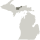

Alcona was at first named "Negwegon County", after the name of a well-known Chippewa chief, also known as "Little Wing", who was an American ally against the British in the War of 1812. It was renamed to Alcona County on March 8, 1843.
Organized in 1885, Alger was named for lumber baron Russell Alexander Alger, who was elected as a Michigan Governor, and U.S. Senator, and appointed as U.S. Secretary of War during the William McKinley Presidential administration.
Allegan County was organized in 1885 and has long been a regional tourist draw, particularly the Tulip Time Festival in Holland and the area along Lake Michigan. Allegan also hosts the Saugatuck Dunes State Park with trails through scenic dunes and a swimming beach on Lake Michigan.
Officially organized in 1857, Alpena County was originally named, Anomickee County. The 45th parallel bisects the county, meaning it is half way between the North Pole and the equator.
Antrim was originally named Meegisee (meaning "eagle"), which was the name of a Chippewa chief who signed the 1821 Treaty of Chicago and the 1826 Treaty of Mississinwas. The name Antrim was one of five Irish or Scots Irish names given to renamed counties.